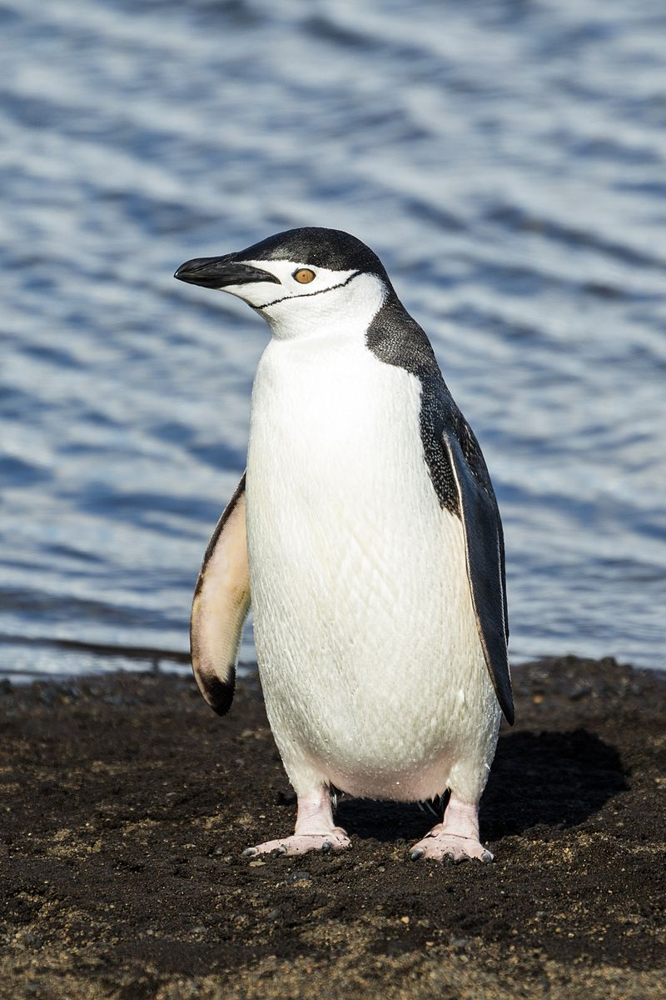

penguin
Penguins ingest a lot of seawater while hunting for fish, but a special gland behind their eyes the supraorbital gland—filters out the saltwater from their blood stream, Penguins excrete it through their beaks, or by sneezing.
- Scientific name: Spheniscidae
- Average Length: 1.1 meter
- Average Lifespan: 20 years
- Habitat: temperate zone
Penguins are some of the most recognizable and beloved birds in the world, Penguins are primarily found only in the Southern Hemisphere, Penguins lost the ability to fly millions of years ago, but their powerful flippers and streamlined bodies make them very accomplished swimmers. They are the fastest swimming and deepest diving species of any birds and can stay underwater up to 20 minutes at a time, Penguins’ eyes work better underwater than they do in the air